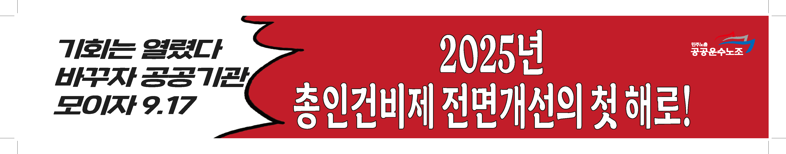
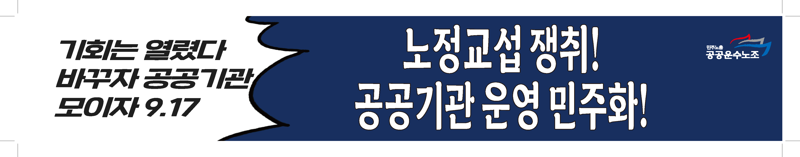
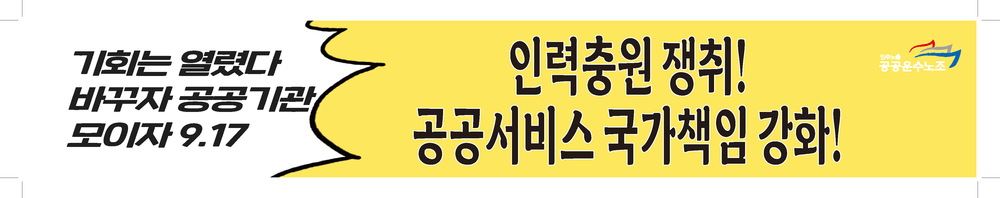
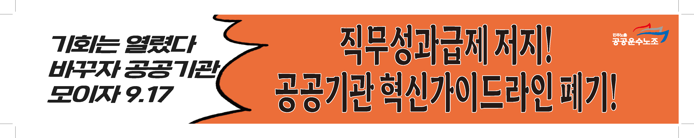
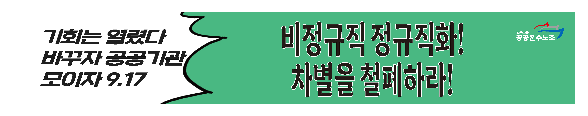

9월 17일, 우리의 운명을 바꾸는 날!
총력투쟁의 선봉에 함께 섭시다! 우리의 권리는 투쟁 없이 주어지지 않습니다.
총력투쟁의 선봉에 함께 섭시다! 우리의 권리는 투쟁 없이 주어지지 않습니다.
근골격계 위험요인조사, 제대로 알고 우리의 건강권을 쟁취합시다.
4.3 평화기행과 함께 조합원들의 목소리를 담는 '조합원 칼럼'이 신설되었습니다.
반복되는 안전사고, 구조적 문제 해결을 위해 지부는 단호히 경고하고 투쟁합니다.
지부, 전투 플루트 1기 대원 극비 모집! 당신의 메마른 감수성을 풀충전할 기회!
동지들, 마침내 결전의 날이 다가오고 있습니다. 우리의 생존과 미래를 건 9.17 공공기관 총파업-총력투쟁이 이제 열흘 앞으로 다가왔습니다. 이번 투쟁은 단순한 임금 협상을 넘어, 철도 현장의 안전과 공공성을 짓밟는 정부의 폭주를 멈춰 세우기 위한 우리 모두의 절박한 외침입니다.
총력투쟁의 카운트다운은 바로 우리, 고양고속차량지부의 현장에서 시작됩니다. 오는 9월 15일(월)과 16일(화) 양일간, 지부 지도부는 조합원 동지들을 직접 찾아가는 현장 순회에 나섭니다. 우리가 왜 싸워야 하는지, 무엇을 쟁취해야 하는지 가슴 뜨겁게 공유하고, 동지들의 생생한 목소리를 듣겠습니다. 이틀간의 현장 순회에 뜨거운 관심과 호응으로 함께해 주십시오. 우리의 결의가 하나로 모일 때, 9월 17일의 함성은 세상을 뒤흔들 것입니다.
우리가 숭례문 앞에서 외칠 5대 핵심 요구는 다음과 같습니다.
첫째, 모든 문제의 근원, '총인건비제'를 전면 개선해야 합니다. 정부는 예산 통제를 명분으로 각 기관의 인건비 총액을 묶어두는 총인건비제를 고수하고 있습니다. 하지만 이 족쇄야말로 현장의 신규 인력 충원을 막고, 안전 예산을 좀먹으며, 정규직과 비정규직의 갈등을 부추기는 모든 문제의 근원입니다. 2025년을 총인건비제 전면 개선의 첫 해로 만들어야 합니다.
둘째, '노정교섭'을 법제화하여 진짜 사장인 정부와 직접 대화해야 합니다. 국제노동기구(ILO)는 이미 한국 정부에 공공부문 노정교섭을 제도화하라고 권고한 바 있습니다. 실질적인 권한은 모두 정부가 쥔 채, 철도공사만 내세우는 기만적인 교섭 구조를 깨뜨려야 합니다. 국가가 사실상 사용자로서 정책을 주도한다면, 마땅히 노동자의 참여가 보장되어야 합니다.
셋째, 더 이상 죽을 수 없다! '인력 확충'으로 '안전한 일터'를 쟁취해야 합니다. 최근 5년간 공기업에서 발생한 산재 사망 누계 통계는 처참합니다. 특히 철도는 정부의 '혁신가이드라인'에 따라 수천 명의 인력 감축이 예고되어, 안전에 거대한 구멍이 뚫렸습니다. 지난 8월 청도 참사에서 또다시 동료를 잃은 우리는 압니다. 인력 감축은 곧 안전 관리 약화와 사고 발생으로 직결된다는 것을 말입니다.
넷째, 공공성을 파괴하는 '직무성과급제'와 '혁신가이드라인'을 폐기해야 합니다. 효율성과 성과라는 미명 아래 도입된 직무성과급제와 혁신가이드라인은, 현장 안전과 공공의 이익보다 경영평가 점수를 우선시하는 왜곡된 구조를 낳았습니다. 국민의 안전과 직결된 우리의 업무는 결코 점수로 재단될 수 없습니다.
다섯째, '비정규직 차별'을 철폐하고 모두가 존중받는 일터를 만들어야 합니다. 정부는 '정규직 전환 완료'를 선전하지만, 자회사 전환 등의 꼼수로 현장의 차별은 여전합니다. 위험의 외주화로 고통받는 비정규직 동지들의 손을 잡고, 차별 없는 일터를 향한 투쟁에 함께해야 합니다.
동지 여러분! 우리의 요구는 지극히 상식적이고 정당합니다. 9월 17일 수요일 오후 3시, 숭례문 앞 세종대로에서 우리의 단결된 힘을 보여줍시다. 한 사람의 열 걸음보다 열 사람의 한 걸음이 세상을 바꿉니다. 현장에서, 그리고 투쟁의 대오에서 함께합시다!
목차로 돌아가기